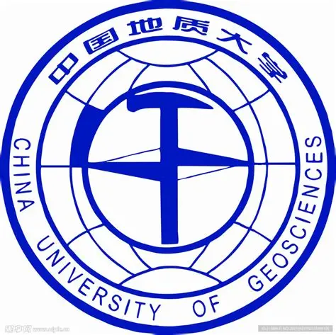

简介
浮游观测与视觉分析课题组 (POVA) 隶属于中国海洋大学 人工智能研究院 · 水下视觉研究团队。团队负责人为 董军宇 教授，国家高层次人才，现任中国海洋大学信息科学与工程学部部长、博士生导师，长期从事海洋大数据、水下视觉信息处理等方向的科研与教学工作。 课题组指导老师为 李岳尊 博士，硕士生导师，入选2024年全球前2%顶尖科学家榜单。
课题组依托国家自然科学基金重点支持项目： 山东近海浮游植物及相关海洋环境要素原位观测与分析系统研究（U1706218） 和海南省三亚市科技创新专项项目： 基于智能取样的近海有害藻华原位监测（2022KJCX92）， 以及中国海洋大学三亚海洋研究院重点研发平台。研究方向聚焦于水下浮游动植物的观测与分析，以及计算机视觉、机器学习和大模型等相关技术的研究与应用。 截至目前，团队已发表相关论文 40 余篇，授权发明专利 3 项，软件著作权 2 项。
🚩 欢迎对相关研究感兴趣的本科生、硕士生及博士生加入课题组！ 联系方式：liyuezun [AT] ouc [DOT] edu [DOT] cn

新闻
🎉🎉 课题组关于《基于微流控采样与多视角成像的便携式浮游生物监测装置》的发明专利已授权！
🎉🎉 祝贺于阳关于浮游植物追踪的工作被IEEE TCSVT期刊接收！（CCF B， 中科院一区）
🎉🎉 祝贺吕清轩关于域适应人脸鉴伪的工作被IEEE TIFS期刊接收！（CCF A，中科院一区）
近期论文
MPT: A Large-scale Multi-Phytoplankton Tracking Benchmark.
Yang Yu, Yuezun Li#, Xin Sun, Junyu Dong#
Intelligent Marine Technology and System(IMTS), 2025 [Code] [多目标浮游植物数据集 MPT dataset]
PhyTracker: An Online Tracker for Phytoplankton.
Yang Yu, Qingxuan Lv, Yuezun Li#, Zhiqiang Wei, Junyu Dong#
IEEE Transactions on Circuits and Systems for Video Technology (TCSVT), 2024 [Code]
DomainForensics: Exposing Face Forgery across Domains via Bi-directional Adaptation.
Qingxuan Lv, Yuezun Li#, Junyu Dong#, Sheng Chen, Hui Yu, Huiyu Zhou, Shu Zhang
IEEE Transactions on Information Forensics and Security (TIFS), 2024
Dynamic Soft Labeling for Visual Semantic Embedding.
Jiaao Yu, Yunlai Ding, Junyu Dong#, Yuezun Li
ACM International Conference on Multimedia Retrieval (ICMR), 2024
Multiview Adaptive Attention Pooling for Image-Text Retrieval.
Yunlai Ding, Jiaao Yu, Qingxuan Lv, Haoran Zhao, Junyu Dong#, Yuezun Li
Knowledge-Based Systems (KBS), 2024
PMOT2023: A large-scale multi-object tracking (MOT) dataset with application to phytoplankton observation.
Jiaao Yu, Qingxuan Lv, Yuezun Li#, Junyu Dong#, Haoran Zhao, Qiong Li
Journal of Marine Science and Engineering (JMSE), 2023
LaFea: Learning Latent Representation beyond Feature for Universal Domain Adaptation.
Qingxuan Lv, Yuezun Li#, Junyu Dong#, Ziqian Guo
IEEE Transactions on Circuits and Systems for Video Technology (TCSVT), 2023
Network Embedding via Deep Prediction Model
X. Sun, Z. Song, Y. Yu, J. Dong, C. Plant, C. Böhm
IEEE Transactions on Big Data, 2023
Pair-Wise Similarity Knowledge Distillation for RSI Scene Classification.
Zhao, H.; Sun, X.; Gao, F.; Dong, J
Remote Sens., 2022
Underwater Enhancement Model via Reverse Dark Channel Prior.
Shen, Y., Zhao, H., Sun, X., Zhang, Y., Dong, J
Pattern Recognition and Computer Vision (PRCV), 2020
Developing a microscopic image dataset in support of intelligent phytoplankton detection using deep learning.
Qiong Li, Xin Sun, Junyu Dong, Shuqun Song, Tongtong Zhang, Dan Liu, Han Zhang, Shuai Han
ICES Journal of Marine Science, 2020
项目
海南省三亚市科技创新专项项目： 基于智能取样的近海有害藻华原位监测（2022KJCX92）
国家自然科学基金重点支持项目： 山东近海浮游植物及相关海洋环境要素原位观测与分析系统研究（U1706218）
成员


校友
吕清轩（2021 博士）
青岛科技大学
李国宇（2022 硕士）
青岛港湾职业技术学院
于佳傲（2021 硕士）
华东师范大学，读博
郭梓骞（2021 硕士）
中海油
庞静溪（2021 硕士）
辽宁定向选调
魏伟（2021 硕士）
光大银行
徐瑞华（2021 硕士）
浪潮
谢斯航（2021 硕士）
广州腾讯科技有限公司
赵浩然（2019 博士）
青岛理工大学，副教授
合作单位
中国科学院海洋研究所

中国地质大学（武汉）
英国莱斯特大学
英国赫瑞瓦特大学